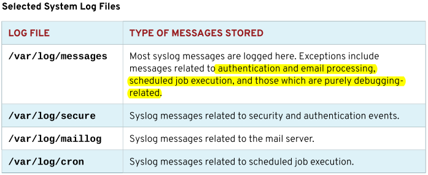

第十一章 分析与存储日志
目标：
- 查找和准确解读系统事件的日志，以满足故障排除。
章节：
- 描述系统日志架构
- 查看Syslog文件
- 查看系统日志条目
- 保留系统日志
- 维护准确的时间
第一节：描述系统日志架构
目标：
- 完成本节后，学生应该能描述RHEL用于记录事件的基本日志架构。
系统日志：
- 进程和内核都会记录日志，有助于进行故障排除。
- 系统日志保存在/var/log目录中，使用less和tail命令可以查看。
- RHEL日志基于Syslog协议，systemd-journald和rsyslog服务处理syslog日志。
- systemd-journald是日志架构核心，记录几乎所有事件消息并存放到带索引的数据库中，
包括内核、引导过程早期的输出、守护进程的标准输出及标准错误等。
- systemd-journald默认将日志记录在内存中，系统重启后将丢失所有的日志信息。
- rsyslog从数据库中读取systemd-journald的日志，根据配置文件的定义进行日志存放。
* 注意：必须启动systemd-journald服务，才能使用rsyslog服务！
- rsyslog对日志按照优先级进行分类存放。
- 常见的日志文件，如下所示：


* 注意：
1. systemd-journald守护进程可记录系统启动早期的事件，较rsyslog守护进程启动早。

2. 有些应用或服务不使用syslog管理日志，但其依然将日志保存于/var/log目录中，
如Apache Web Server。
3. $ man 5 rsyslog.conf：查看rsyslog服务的主配置文件信息
练习 P348：DESCRIBING SYSTEM LOG ARCHITECTURE
第二节：查看Syslog文件
目标：
- 完成本节后，学生应该能解读相关syslog日志文件中的事件，以对问题进行故障排除或
查看系统状态。
将事件记录到系统：
- 使用man 5 rsyslog.conf命令可查看日志记录的类型（facility）与优先级（priority）。
- syslog子系统记录的日志具有8个等级，如下所示：

- rsyslog服务的主配置文件（全局配置）：/etc/rsyslog.conf
- rsyslog服务的个性化配置文件：/etc/rsyslog.d/*.conf
rsyslog规则示例：
- $ cat /etc/rsyslog.conf：查看rsyslog主配置文件定义的规则

日志文件轮转：
- logrotate工具轮转日志文件，防止/var/log空间将文件系统占满。
- 轮转时，重命名日志文件（添加时间戳），并创建新的空日志文件。
- 轮转若干次（默认4次），丢弃最旧的日志文件，释放磁盘空间。
* 注意：
/etc/logrotate.conf：日志轮询主配置文件

- 每天都会计划运行logrotate程序，轮转频率依据配置文件定义。
- $ man logrotate：查看logrotate命令使用与日志轮询配置参数信息
分析日志条目：
- 日志文件在末尾显示最新的信息，信息记录采用标准格式。
- 以/var/log/secure为例，如下所示：

监控日志：
- 使用tail命令监控实时日志信息。

手动发送syslog消息：
- $ logger -p <facility>.<priority> "<message_content>"
# 指定日志信息facility、priority与消息内容
# 默认情况下使用user.notice

练习 P356：REVIEWING SYSLOG FILES
第三节：查看系统日志条目
目标：
- 完成本节后，学生应该能查找和解读系统日志中的条目，以对问题进行故障排除
或查看系统状态。
查找事件：
- systemd-journald将日志存放在带索引的结构化二进制journal文件中，存放在/run/log目录中。

- journalctl命令可用于检索日志信息，建议以root用户执行。

- 优先级为noteice或warning的日志显示为加错文本，error及以上的日志显示为红色文本。
- journalctl常用命令：
$ journalctl -n <number>
# 指定显示最后10条日志，也可以指定条目数量。
$ journalctl -f
# 实时刷新日志，类似于tailf或tail -f命令。
$ journalctl -p <priority>
# 显示debug、info、notice、warning、err、crit、alert和emerg该级别及其之上的日志。
$ journalctl --since --until "YYYY-MM-DD hh:mm:ss"
# 显示指定时间范围内的日志，必须使用双引号。
# 如果省略日期，则命令会假定日期为当天；如果省略时间，则命令假定为自 00:00:00 起的整天。
# yesterday、today与tomorrow可以指定日志时间段，可参考 systemd.time(7) man 帮助。


$ journalctl -o verbose：显示更加详细的日志信息

- journalctl配合以下字段，可以搜索特定内容的日志。
- 可参考 systemd.journal-filelds(7) man 帮助：
1. _COMM：命令名称
2. _EXE：进程的可执行文件的路径
3. _PID：进程PID
4. _UID：运行该进程的用户UID
5. _SYSTEMD_UNIT：启动该进程的systemd单元

练习 P364：REVIEWING SYSTEM JOURNAL ENTRIES
第四节：保留系统日志
目标：
- 完成本节后，学生应该能配置系统日志，以在服务器重启时保留事件记录。
永久存储系统日志：
- 默认情况下，system journals保存在内存/run/log/journal目录中，系统重启
会被清除。
- /etc/systemd/journald.conf：设置Storage参数实现日志永久保存
1. persistent：永久保存在/var/log/journal目录中
2. voltile：临时保存在/run/log/journal目录中
3. auto（默认）：如果有/var/log/journal目录存在，则永久保存，如果没有则临时保存。
- $ man 5 journald.conf：查看/etc/systemd/journald.conf的参数信息

- 日志（journal）的大小受到日志轮转机制限制。
- 默认情况下，日志的大小不能超过所处文件系统的10%，也不能造成文件系统的可用空间低于15%。
- 此值可以在/etc/systemd/journald.conf中设置。

- /etc/systemd/journald.conf中Storage参数修改后，需重启systemd-journald服务。
- 可在/var/log/journal目录中查看二进制journal文件（*.journal）。

- 永久存储journal日志后，可使用journalctl命令查看系统启动的次数与启动信息。
- $ journalctl --list-boots：查看系统引导的条目信息

$ journalctl -b <boot_entry>：查看指定条目的系统引导信息
$ journalctl -b -1：查看前一次系统引导过程信息
练习 P371：PRESERVING THE SYSTEM JOURNAL
第五节：维护准确的时间
目标：
- 完成本节后，学生应该能利用NTP维护准确的时间同步，并且配置时区以确保系统日志和
日志记录的事件标有正确的时间戳。
设置本地时钟与时区：
- 保证系统的准确时间，并及时同步时间非常重要。
- 如，日志时间戳的准确性关系到系统故障的定位与排除、数据库或存储集群的数据一致性等。
- 时间同步采用NTP协议。
- timedatectl命令常用示例：
$ timedatectl：显示系统时钟信息；UTC为协调世界时、RTC为本地硬件时间

$ timedatectl list-timezones：列出时区数据库
$ tzselect：交互式设置系统时区
$ timedatectl set-timezone <timezone>：设置系统时区

$ timedatectl set-time "YYYY-MM-DD hh:mm:ss"：设置系统日期与时间

$ timedatectl set-ntp [true|false]：是否启用NTP时间同步
* 注意：在RHEL 8中，该命令将对是否使用Chronyd NTP时间同步服务做出调整。

配置与监控Chronyd：
- chronyd服务通过与配置的NTP服务器进行同步，使通常不准确的本地硬件时钟（RTC）
保持正确运行。
- 如果没有可用的网络连接，chronyd将计算RTC时钟漂移，记录在/etc/chrony.conf
配置文件指定的driftfile变量中。
- 修改/etc/chrony.conf主配置文件可配置NTP时间服务源。


- $ chronyc sources -v：查看Chrony NTP时间服务同步状态

练习 P378：MAINTAINING ACCURATE TIME
Lab P382：ANALYZING AND STORING LOGS